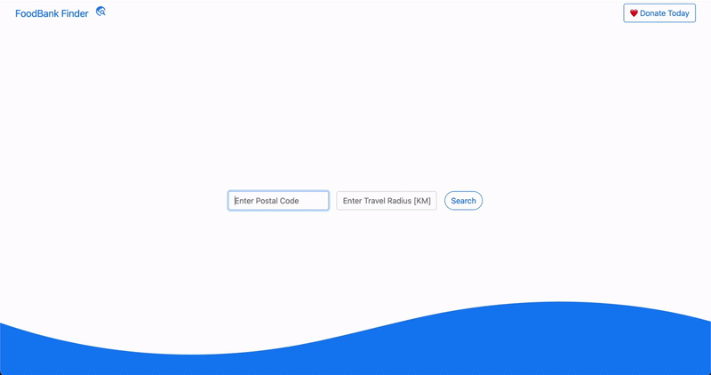
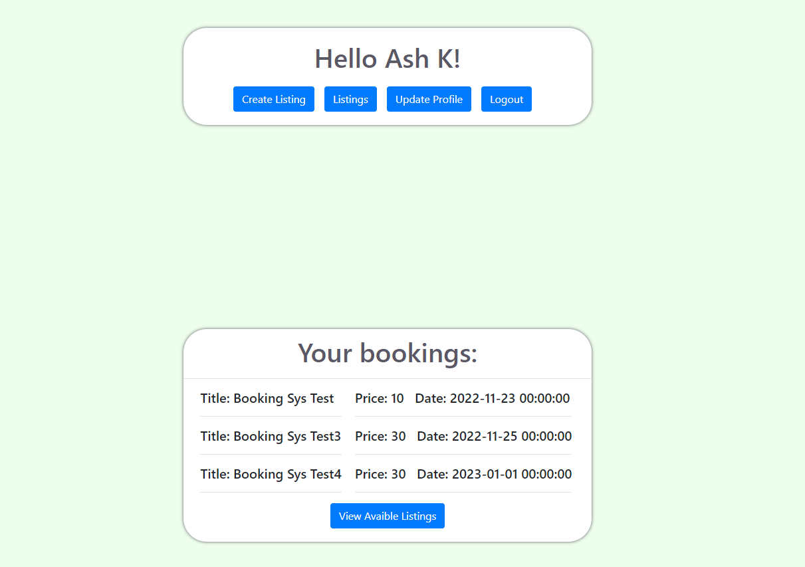

FoodBank Finder : QWIC Hackherthon Winner
I led a team of four in creating a web application that addresses sustainability and social good. Our goal was to help individuals in need easily locate the nearest food bank that best meets their needs. We utilized HTML and CSS for the front-end development and Python Flask for the back-end, incorporating Google APIs to enhance functionality. Despite the tight 24-hour deadline, our team was able to design, develop, and present a fully functional web application.
Local Search Engine

A powerful search engine that allows you to quickly and easily search through the local files on your computer. Utilizing AVL Trees, Max Heaps, and Priority Queues, this program determines the most relevant files on your computer based on your query and presents them in a browser-like structure, with the top result being the most relevant. Written in Python, this search engine is a great tool for anyone looking to efficiently find information they need.
Portable Wifi Router
Created a proprietary high speed mobile router using a modular Linux system. Reprogrammed raspbian source files to configure network traffic and designed a system that can utilize multiple wireless connections to host a single bonded connection that can be used anywhere.
QBNB
Worked in a team, utilizing the SCRUM methodology, to develop a clone of Airbnb. During this project, I gained valuable experience working with SQL databases, docker, HTML, CSS, and various software quality and assurance practices. The end result was a fully-functional clone of Airbnb, complete with all the key features of the original platform. The technologies we used in the project include: Python, HTML, CSS, Docker,SQL.